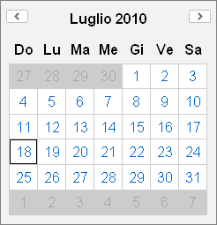

Render pages with YUI components
Once loaded CIwY class and almost one component (es. calendar), to get YUI component working is necessary to render the HTML page
Recipe ingredients
To render a YUI working page you need:
- $this->ciwy->yuiTags() function
- $this->ciwy->container() function
- $this->ciwy->generate() function
- An HTML page
Embed YUI core in the HTML page
YUI to work needs to be included in the HTML page; since YUI is written in Javascripts you need to include JS scripts as usual
<script src="http://yui.yahooapis.com/2.8.0r4/build/yahoo-dom-event/yahoo-dom-event.js"></script>
YUI is composed by several JS files, one for each widget or utility and some other spare JS and CSS fiels, that needs to be included in the HTML page as needed and in the right order.
For this reason YUI is provided of some utilities
You can use $this->ciwy->yuiTags() without parameters to get HTML tags that will embed YUI core in your pages.
<?php echo $this->ciwy->yuiTags(); ?>
Note: For better page rendering perfomance fetch the output of this function in two part.
Fetch CSS on the top of the page in the header using $this->ciwy->yuiTags(YUI_CSS);
Fetch JS code on the bottom of the page near the closing body tag using $this->ciwy->yuiTags(YUI_JS);
Place the YUI widget
To place the YUI widget in the page you need a 'container'. Usually is a div like this
<div id="container-name"></div>
CIwY will provide the appropriate container for each widget instantiated with $this->ciwy->container('widget_name') function.
The function will return the HTML code of the current instance of the given 'widget_name'.
<?php echo $this->ciwy->container('calendar'); ?>
Generate the JS code to run YUI
To have YUI working in the page is necessary to run some JS code. The appropriate JS code is generated by $this->ciwy->generate() function.
Note: For better page rendering perfomance, place this function in the bottom of the page near the closing body tag.
<?php echo $this->ciwy->generate(); ?>
Skin the HTML page
YUI needs some CSS rules to skin its widgets. To use provided YUI skin, just apply the class 'yui-skin-sam' to the html body
<body class="yui-skin-sam">
You can provide your personalized CSS ruleset. For more info read YUI 2: Understanding Skins at Yahoo! Developer Network.
The HTML page template
Some rule have to be respected writing HTML template page:
- Skin the HTML body with class 'yui-skin-sam';
- The page must have 'YUI tags' and 'JS code' to run YUI (HTML standards recomands to put those just before the body closing tag);
- The container can be put everywhere in the page.
<html>
<head>
<title>Calendar example</title>
<?php echo $this->ciwy->yuiTags(YUI_CSS); ?>
</head>
<body class="yui-skin-sam">
[...] other HTML tags [...]
<?php echo $this->ciwy->container('calendar'); ?>
[...] other HTML tags [...]
<?php echo $this->ciwy->yuiTags(YUI_JS); ?>
<?php echo $this->ciwy->generate(); ?>
</body>
</html>
The final result
If all ingredients are combined correctly the final result will be like this
<html>

<head>
<title>Calendar example</title>
<link rel="stylesheet" type="text/css" href="http://yui.yahooapis.com/2.8.0r4/build/calendar/assets/skins/sam/calendar.css" />
</head>
<body class="yui-skin-sam">
[...] other HTML tags [...]
<div id="cal1Container"></div>
[...] other HTML tags [...]
<script type="text/javascript" src="http://yui.yahooapis.com/2.8.0r4/build/yahoo-dom-event/yahoo-dom-event.js"></script>
<script type="text/javascript" src="http://yui.yahooapis.com/2.8.0r4/build/calendar/calendar-min.js"></script>
<script type="text/javascript">
(function() {
var Dom = YAHOO.util.Dom,
Event = YAHOO.util.Event;
cal1 = new YAHOO.widget.Calendar("cal1", "cal1Container", {
MD_DAY_POSITION:1,
MD_MONTH_POSITION:2,
MDY_DAY_POSITION:1,
MDY_MONTH_POSITION:2,
MDY_YEAR_POSITION:3,
MY_MONTH_POSITION:1,
MY_YEAR_POSITION:2,
MY_LABEL_MONTH_POSITION:1,
MY_LABEL_YEAR_POSITION:2,
MONTHS_LONG:["Gennaio", "Febbraio", "Marzo", "Aprile", "Maggio", "Giugno", "Luglio", "Agosto", "Settembre", "Ottobre", "Novembre", "Dicembre"],
MONTHS_SHORT:["Gen", "Feb", "Mar", "Apr", "Mag", "Giu", "Lug", "Ago", "Set", "Ott", "Nov", "Dic"],
WEEKDAYS_SHORT:["Do", "Lu", "Ma", "Me", "Gi", "Ve", "Sa"],
WEEKDAYS_MEDIUM:["Dom", "Lun", "Mar", "Mer", "Gio", "Ven", "Sab"],
WEEKDAYS_LONG:["Domenica", "Lunedì", "Martedì", "Mercoledì", "Giovedì", "Venerdì", "Sabato"],
WEEKDAYS_1CHAR:["D", "L", "M", "M", "G", "V", "S"]
});
cal1.render();
})();
</script>
</body>
</html>